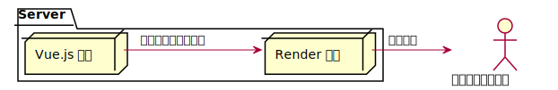

在以前沒有 SPA（Single Page Application，前後端分離）架構的時代，畫面都是在 Server 端就已經 Render 好，然後才傳送到前端的，也就是說，使用者（機器人）在拿到畫面的時候，就已經是完整的資料了。
若使用了 SPA 的架構，Server 端將不再 Render 畫面，只處理資料的部份，但畫面總要有人 Render，使用者才有東西看，也就是說，Render 畫面的重責大任就交到前端手上了，也就是我們常說的 CSR（Client Side Render）。
因此，當使用了 SPA 的架構，機器人在逛網站的時候就拿不到完整的網站了（因為 Server 端不再 Render 畫面），也就是說機器人看到的網頁只是空白一片，沒有任何內容，此時 SEO 便出現了巨大的問題。
那 SEO 的問題該怎麼辦呢？難到要放棄 SPA，技術退回 10 年前嗎？當然不是！
解決方案
其實只要讓 Server 端能夠 Render 完整的畫面，便能解決 SEO 的問題。
這裡的意思並不是要放棄 SPA，而是讓 Server 端代替前端來 Render 畫面，如此一來使用者（機器人）在拿到畫面的時候就直接是完整的畫面了，直接看下圖：

在 Server 端 Render SPA 架構的畫面，可以分成 Prerender 與 Server Side Render 兩種技術，但，差別在哪呢？
Prerender
預先 Render 好所有完整的頁面，當使用者來訪問頁面的時候，就將已經 Render 好的完整頁面回傳給使用者。
Render 時機：
- 前端程式更新後
- 後端資料更新後
缺點：
- 後端更新時就需要重新 Render 畫面，後端資料更新頻繁時很吃系統資源
- 網站如果有權限管控（使用者登入），系統將會有兩套 Render 的機制（因為只有不需要權限的部份要 Prerender），如此一來系統複雜度加大大增加
Server Side Render
當使用者訪問的時候，才 Render 畫面，再回傳給使用者。
Render 時機：
- 使用者訪問時
缺點：
- 一有使用者訪問就需要 Render 畫面，流量大時很吃系統資源
如何選擇
在考量系統複雜度及後續維護成本的基礎下，只要網站有後台或是權限管控的功能，都會直接選用 SSR，必竟，機器還是便宜過人力成本的。
當然 SSR 也不是萬靈丹，還是需要經過綜合評估後才能選出最適合當下的解決方案。
Nuxt.js
雖然已經選擇了 SSR，但要從零搭建 SSR 服務是非常麻煩且費工的，不過沒關係，介紹大家一個好工具 - Nuxt.js！
Nuxt.js 讓我們可以專注在 Vue.js 的開發，將 SSR 這種麻煩事全部交給 Nuxt.js 來處理。
註：雖然 Google Search Bot 已經有支援 SPA 架構的 CSR 了，不過結果並不是 100% 正確的，所以在本文撰寫的當下，SSR 或 Prerender 還是必要的。